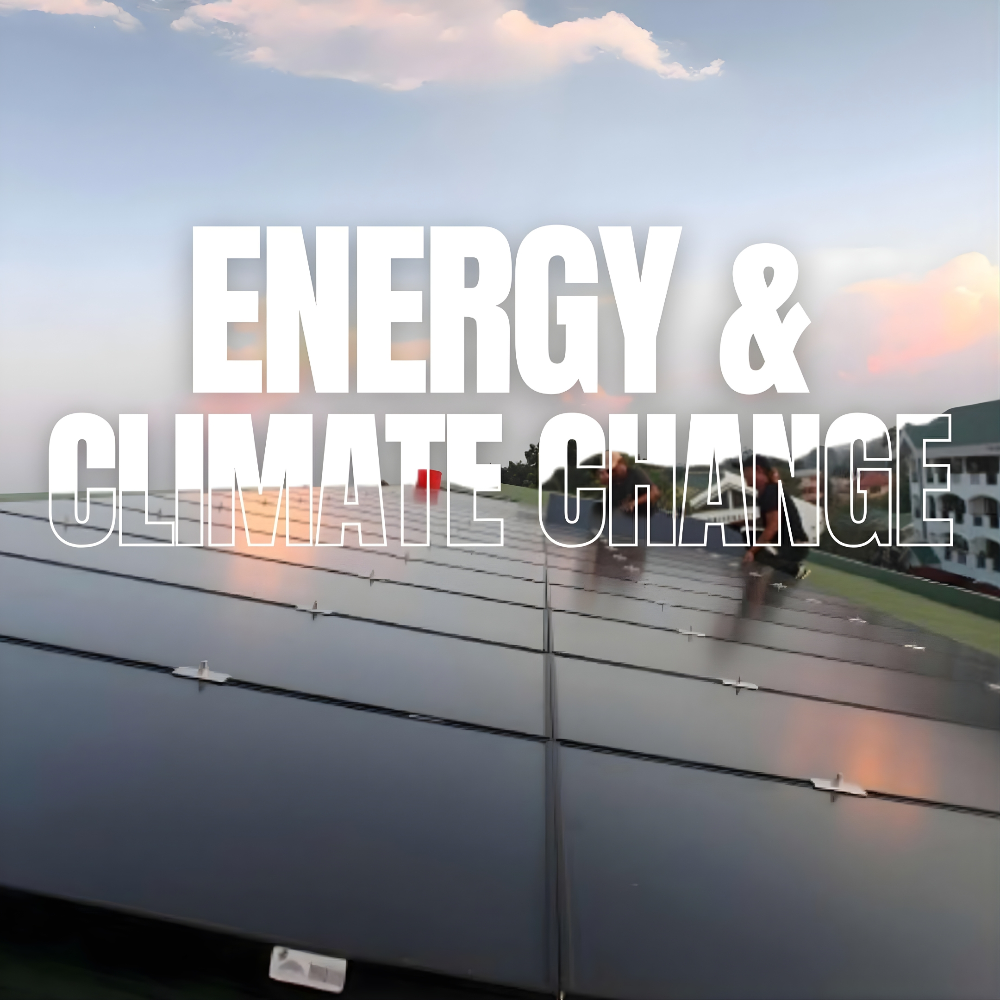
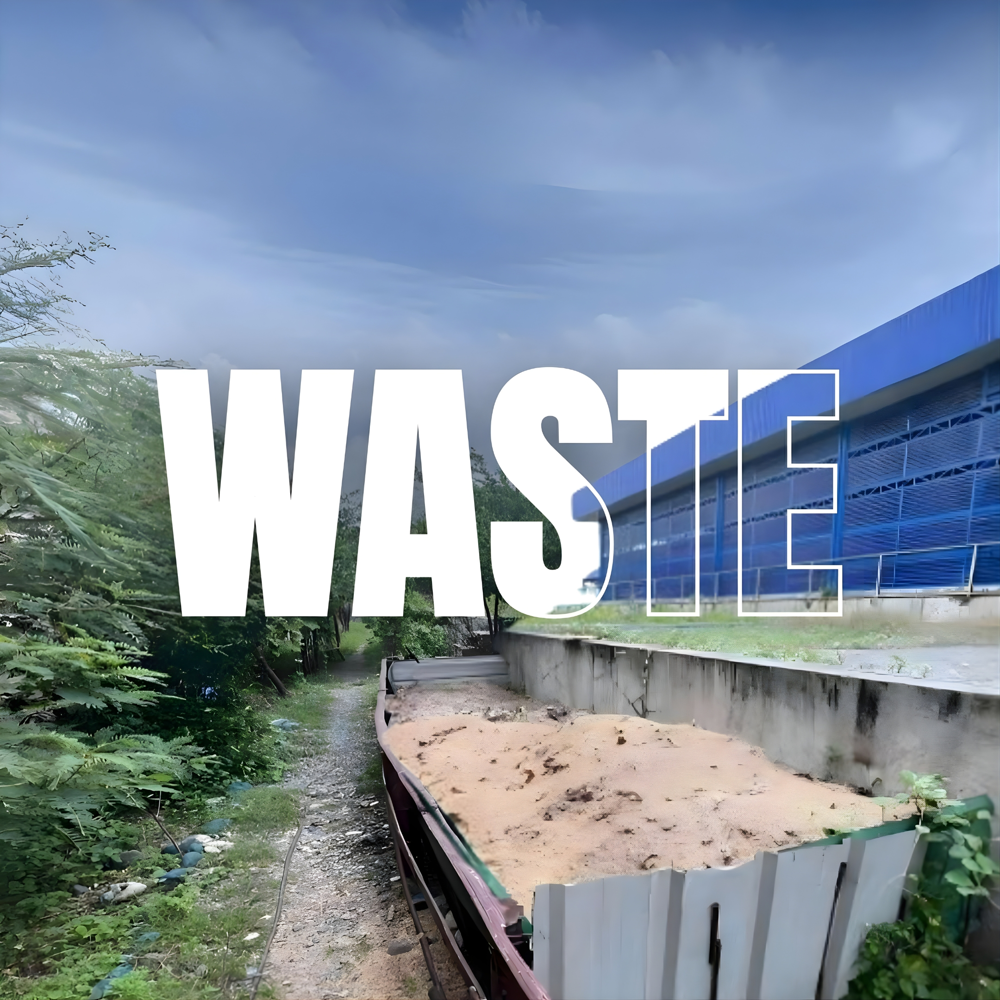
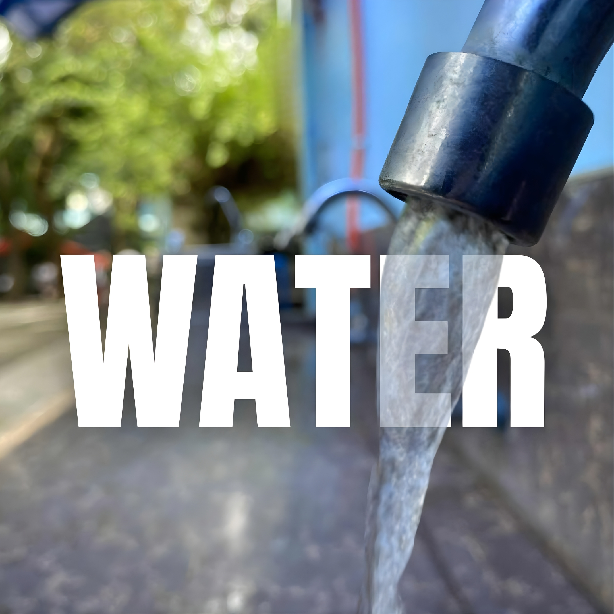

Global Recognition
An Academic Milestone
The UI GreenMetric World University Rankings evaluates green campuses and environmental sustainability across 39 indicators in 6 criteria.
As a first try for UCU in this global ranking, it is an academic milestone worthy of celebration.
Congratulations, UCUians! Mabuhay ang Unibersidad ng Urdaneta!
Out of 1,477 universities worldwide in 2025, WE ARE:
SUSTAINABILITY INDICATORS
Setting and Infrastructure

Energy and Climate Change

Waste

Water
Transportation
Education and Research
Digitalization
These seven sustainability indicators form the strategic framework of Urdaneta City University’s Smart Eco Campus initiative. By aggressively aligning our institutional metrics with global environmental standards—such as the UI GreenMetric framework—we do more than cultivate a green learning environment. We forge high-impact linkages with international stakeholders, driving collaborative research and scalable sustainable practices that elevate our graduates to global competitiveness.